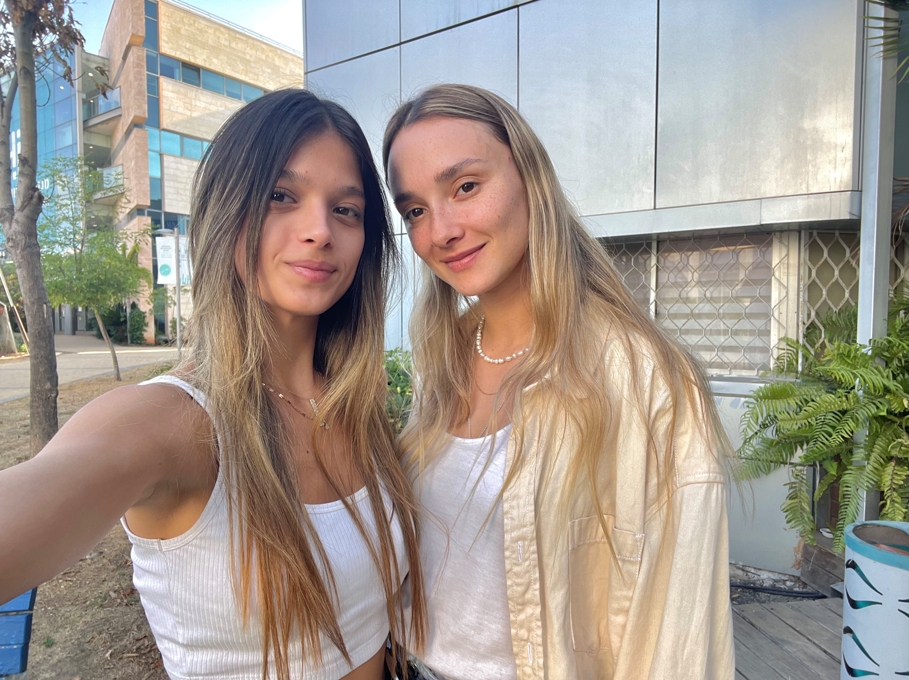

האתר "make it in 10 " נבנה בעקבות מצוקה אישית שחווינו בתור היותנו סטודנטיות עם לו"ז עמוס מאוד, שלא מוצאות זמן לבשל, והרבה פעמים מגיעות לסיטואציה שנאלצות לאכול אוכל מוכן שהוא לא מזין ובטח לא בריא... בעקבות כך החלטנו לחקור את הנושא ולמצוא פתרון! ולכן קיבצנו מתכונים רבים שלא דורשים התעסקות של יותר מעשר דקות! פתרון מדהים במיוחד לקהל היעד שלנו שמתמקד באנשים שמנהלים חיי שגרה עמוסים, ואין ברשותם זמן רב לבישול אך עדיין מעוניינים לשמור על שגרה מזינה.
פותח על ידי: שירה שפירא וסתיו מרק. במסגרת פרויקט לקורס "פיתוח אתרי אינטרנט" בשנה א', תשפ"ג. האתר אופיין ועוצב לפי עקרונות של "עיצוב ממשק" ופותח ב HTML5 ו- CSS3 תוך התחשבות בעקרונות "נגישות אתרים". להלן המסמכים שפותחו באתר:
להלן המסכים שפותחו באתר:
דף הבית
אודות
חלבי
בשרי
קינוחים חמים
צור קשר
מפת אתר
